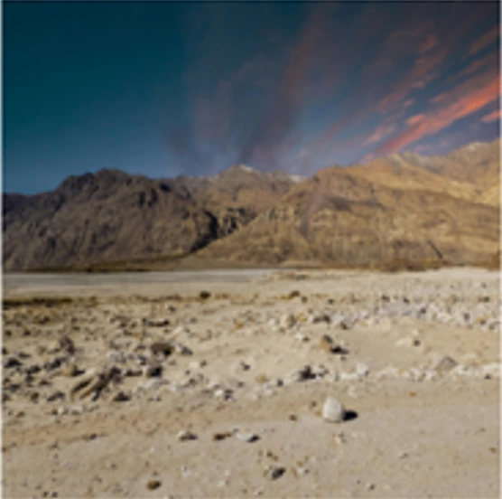
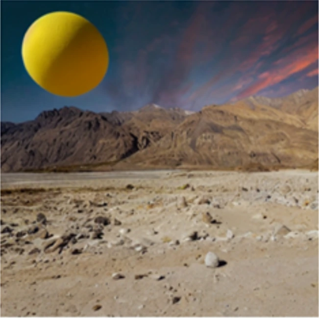
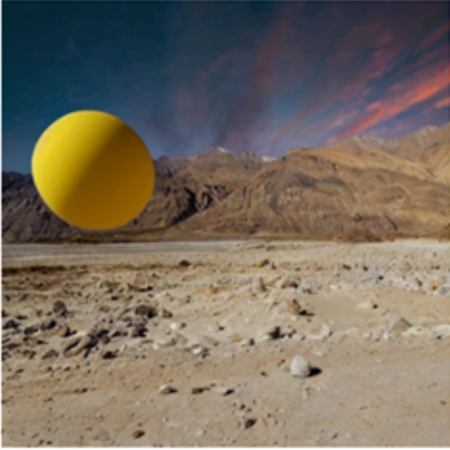
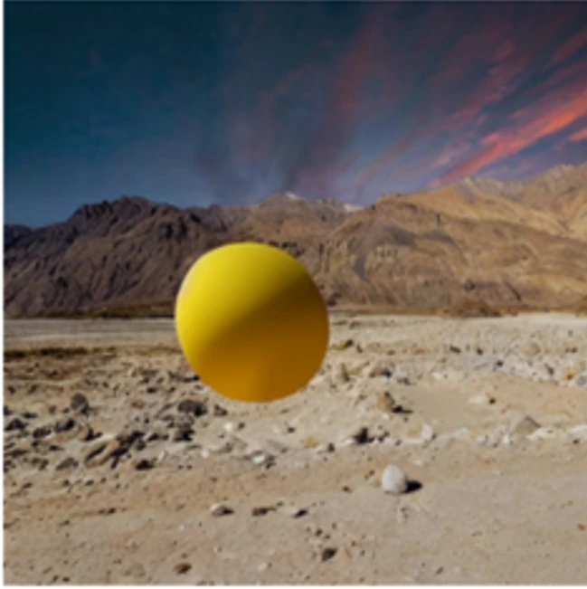
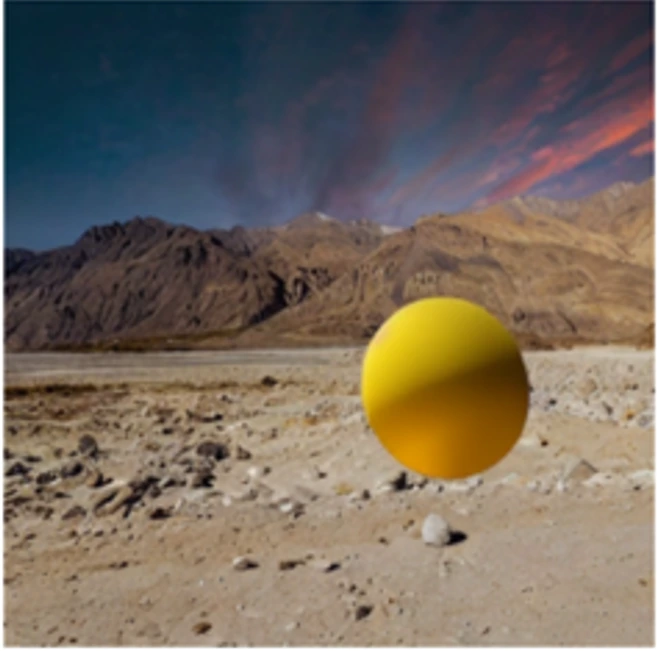
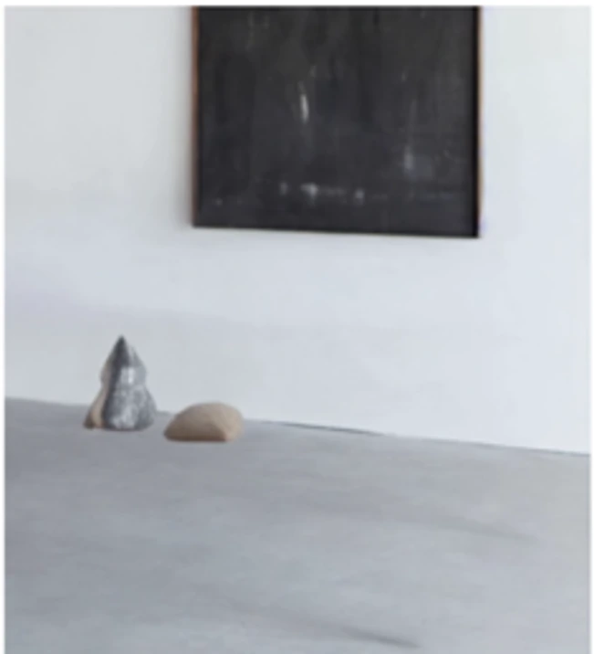
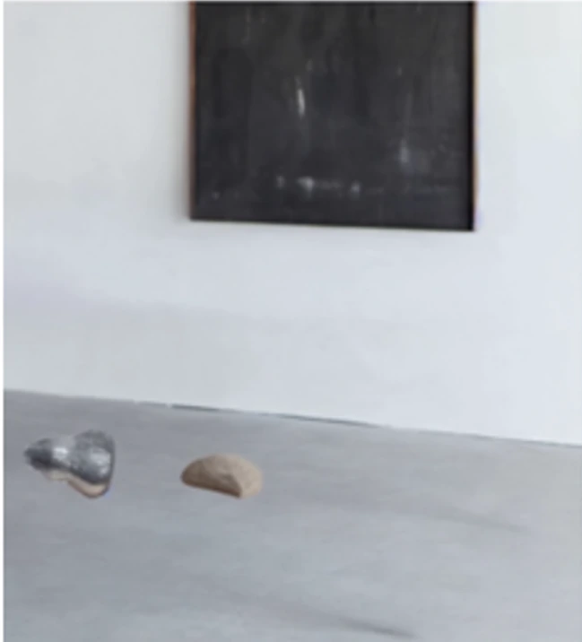
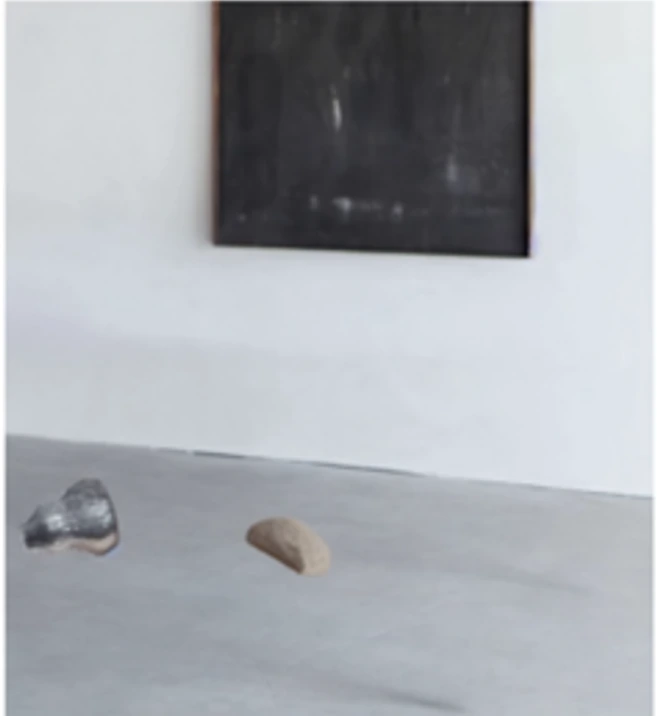
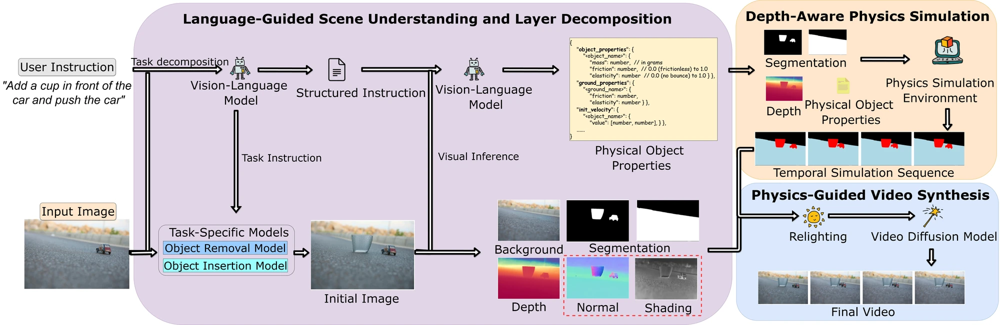
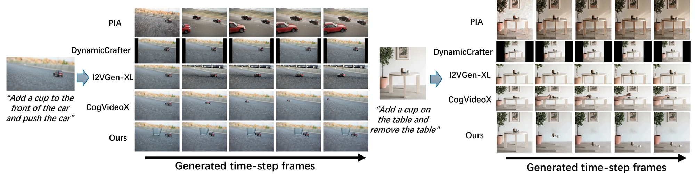

Understand the scene
Decompose the instruction into insertion, removal, or control. Segment objects, estimate depth and surface normals, infer material properties, and recover the background.
Objects, depth layers, and physical parameters
ICME 2026Controllable image animation
A still image, a language instruction, and a layer of physics. Animate objects with depth-aware motion, perspective changes, and scene-consistent lighting.
✉ Corresponding author: Zili Yi
Selected paper results
Generated framesTime →
A ball is inserted above a stack of stones. The sampled output frames show the stack toppling as the objects interact.
Input

Generated framesTime →




An inserted ball descends toward the ground and changes direction after contact, while its appearance adapts to the scene lighting.
Generated framesTime →
The car moves through the scene with its apparent size changing along the trajectory. Depth-dependent scaling connects the simulated motion to the image perspective.
Generated framesTime →



Removing the supporting table sets the vase and added stone in motion. A single instruction combines object editing with the resulting physical interaction.
01 / The idea
Animating an image means deciding both what should move and how that motion should behave. PhysLayer connects natural-language instructions to explicit rigid-body simulation, using estimated depth to organize objects into interacting layers.
A vision-language model interprets the task and estimates physical properties. The simulator adds depth displacement and perspective-consistent scaling to planar dynamics. Relighting and video diffusion then turn the simulated trajectories into a coherent sequence. This 2.5D representation supports useful depth effects without reconstructing a complete 3D scene.
02 / How it works
Three stages connect the user’s instruction to object motion and the final image sequence.
Decompose the instruction into insertion, removal, or control. Segment objects, estimate depth and surface normals, infer material properties, and recover the background.
Objects, depth layers, and physical parameters
Pymunk handles planar rigid-body dynamics. The depth extension updates object position and apparent scale; objects are reassigned as they cross depth-layer boundaries.
Depth-aware object trajectories
Composite transformed objects onto the background, update lighting from scene geometry, and use SEINE refinement to improve visual and temporal coherence.
A physics-guided animation

Each object has planar position and rotation, plus a depth displacement. As depth changes, perspective scaling adjusts its apparent size. Collision detection operates within each depth layer, an efficient approximation that does not model arbitrary collisions between objects at substantially different depths.
03 / Experiments
Compare automatic metrics, human ratings, and the contribution of each component.
Five baselines cover general image-to-video generation and the physics-aware PhysGen method. FID and Motion-FID are better when lower; the other two metrics are better when higher.
Scroll sideways to see all metrics →
| Method | CLIP similarity ↑ | FID ↓ | Motion-FID ↓ | Motion smoothness ↑ |
|---|---|---|---|---|
| PIA | 16.17 | 215.06 | 418.51 | 0.981 |
| DynamiCrafter | 16.16 | 185.86 | 429.22 | 0.954 |
| CogVideoX | 16.18 | 120.91 | 406.32 | 0.978 |
| I2VGen-XL | 16.28 | 187.35 | 442.91 | 0.956 |
| PhysGen | — | 112.83 | 401.61 | 0.982 |
| PhysLayer | 16.64 | 102.32 | 389.64 | 0.986 |
PhysGen does not report CLIP similarity in this comparison. The dash is a missing value, not a zero.
102.32 FID vs. 112.83 for PhysGen corresponds to a 9.3% relative reduction. Motion-FID improves from 401.61 to 389.64.
Ten participants evaluated 30 randomly selected videos using a 1–5 Likert scale for text–video alignment, visual quality, and physical plausibility.
Scroll sideways to see all metrics →
| Method | Text–video alignment ↑ | Visual quality ↑ | Physical plausibility ↑ |
|---|---|---|---|
| PIA | 1.86 | 1.68 | 1.55 |
| DynamiCrafter | 1.97 | 2.02 | 1.82 |
| I2VGen-XL | 2.21 | 2.54 | 2.16 |
| CogVideoX | 3.12 | 3.35 | 2.63 |
| PhysGen | — | 3.56 | 3.31 |
| PhysLayer | 4.23 | 3.83 | 4.10 |
All human ratings use a 1–5 scale; higher is better. Text–video alignment for PhysGen is not reported.
Physical plausibility reaches 4.10 / 5, compared with 3.31 for PhysGen. Text–video alignment reaches 4.23, compared with 3.12 for CogVideoX.
The paper reports an ablation study on 30 videos spanning all three tasks. Each variant removes one component while retaining the rest of the pipeline.
Scroll sideways to see all metrics →
| Method | CLIP similarity ↑ | FID ↓ | Motion-FID ↓ | Motion smoothness ↑ |
|---|---|---|---|---|
| Without depth scaling | 16.52 | 118.45 | 405.28 | 0.979 |
| Without depth motion | 16.48 | 115.67 | 398.42 | 0.981 |
| Without relighting | 16.61 | 108.94 | 392.11 | 0.985 |
| Without language guidance | 15.93 | 105.28 | 391.87 | 0.984 |
| Full PhysLayer | 16.64 | 102.32 | 389.64 | 0.986 |
Without depth scaling: S(d) = 1. Without depth motion: the depth velocity is set to zero.
Removing depth scaling raises FID from 102.32 to 118.45. Removing language guidance causes the largest drop in CLIP similarity, from 16.64 to 15.93.

04 / Practical details
Runtime and scope help put the results in context.
The reported warm inference time is about 100–105 seconds for a 16-frame, 512 × 512 output on one NVIDIA A6000. Physics simulation takes about 5 seconds; diffusion synthesis takes about 60 seconds. One-time model initialization is excluded.
| Component | Time |
|---|---|
| Scene understanding | 10 s |
| Vision inference, by task | 21–26 s |
| Physics simulation | 5 s |
| Relighting | 4 s |
| Video synthesis | 60 s |
The system is designed for rigid objects and a fixed camera. It approximates depth through layers, retaining controllable object motion while avoiding full scene reconstruction.
The implementation uses 160 simulation steps at 30 Hz and uniformly samples 16 frames. The main evaluation covers insertion, removal, and control, with 20 source images per task and five physical-parameter variations per image.
Read the prompts, collision procedure, and runtime analysis ↗
05 / Reference
Accepted to ICME 2026. Use the arXiv citation below for this preprint; the paper and appendix above contain the full method and evaluation.
@misc{xie2026physlayer,
title = {PhysLayer: Language-Guided Layered Animation with Depth-Aware Physics},
author = {Xie, Tianyidan and Huang, Zhentao and Wang, Mingjie and Huang, Xin and Zhou, Jun and Gong, Minglun and Yi, Zili},
year = {2026},
eprint = {2604.23574},
archivePrefix = {arXiv},
primaryClass = {cs.CV},
url = {https://arxiv.org/abs/2604.23574}
}